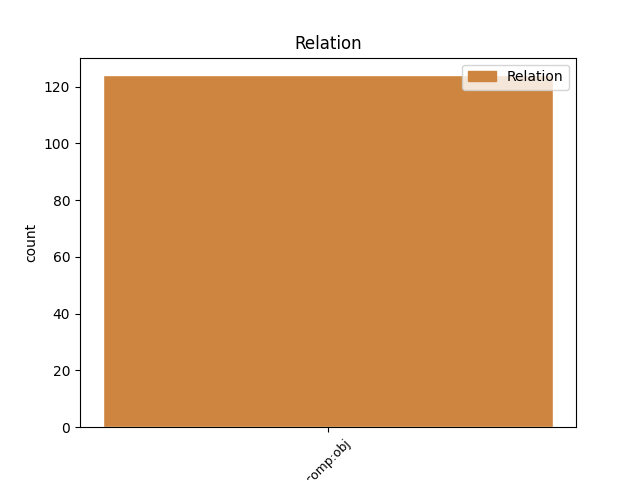
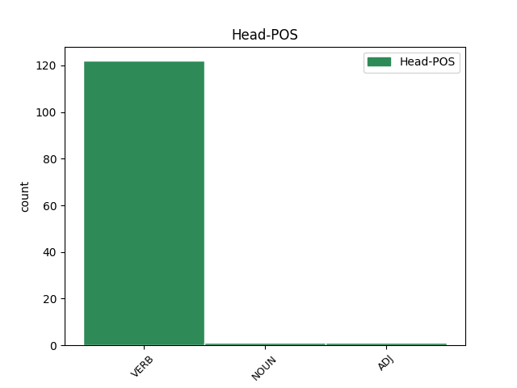
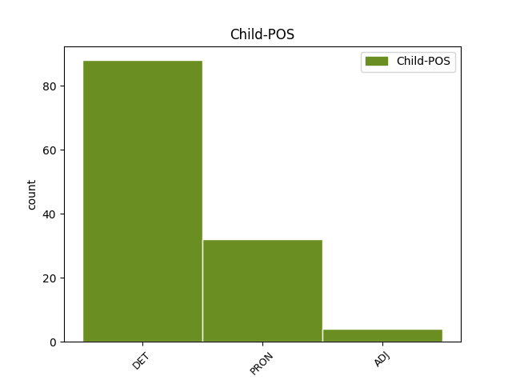

Distribution of features within this leaf



Agreement Rules sorted by frequency.
- When the dependent token is the direct object complements(comp:obj) of the head token, and the dependent token is DET.
1 Samo _ _ _ _ 0 _ _ _
2 prostori _ _ _ _ 0 _ _ _
3 koje koji DET Pi-mpa Case=Acc|Gender=Masc|Number=Plur|PronType=Int,Rel 7 comp:obj _ _
4 smo _ _ _ _ 0 _ _ _
5 kao _ _ _ _ 0 _ _ _
6 čitaoci _ _ _ _ 0 _ _ _
7 naseljavali naseljavati VERB Vmp-pm Gender=Masc|Number=Plur|Tense=Past|VerbForm=Part|Voice=Act 0 _ _ _
8 , _ _ _ _ 0 _ _ _
9 ostaju _ _ _ _ 0 _ _ _
10 za _ _ _ _ 0 _ _ _
11 čitav _ _ _ _ 0 _ _ _
12 život _ _ _ _ 0 _ _ _
13 pouzdana _ _ _ _ 0 _ _ _
14 kopna _ _ _ _ 0 _ _ _
15 na _ _ _ _ 0 _ _ _
16 koja _ _ _ _ 0 _ _ _
17 se _ _ _ _ 0 _ _ _
18 uvek _ _ _ _ 0 _ _ _
19 možemo _ _ _ _ 0 _ _ _
20 vratiti _ _ _ _ 0 _ _ _
21 . _ _ _ _ 0 _ _ _
1 Tako _ _ _ _ 0 _ _ _
2 je _ _ _ _ 0 _ _ _
3 i _ _ _ _ 0 _ _ _
4 kod _ _ _ _ 0 _ _ _
5 Šerloka _ _ _ _ 0 _ _ _
6 Holmsa _ _ _ _ 0 _ _ _
7 i _ _ _ _ 0 _ _ _
8 Herkula _ _ _ _ 0 _ _ _
9 Poaroa _ _ _ _ 0 _ _ _
10 , _ _ _ _ 0 _ _ _
11 ali _ _ _ _ 0 _ _ _
12 uz _ _ _ _ 0 _ _ _
13 jedan _ _ _ _ 0 _ _ _
14 mali _ _ _ _ 0 _ _ _
15 dodatak _ _ _ _ 0 _ _ _
16 : _ _ _ _ 0 _ _ _
17 oba _ _ _ _ 0 _ _ _
18 junaka _ _ _ _ 0 _ _ _
19 su _ _ _ _ 0 _ _ _
20 više _ _ _ _ 0 _ _ _
21 vezana _ _ _ _ 0 _ _ _
22 za _ _ _ _ 0 _ _ _
23 politički _ _ _ _ 0 _ _ _
24 sistem _ _ _ _ 0 _ _ _
25 od _ _ _ _ 0 _ _ _
26 Dipena _ _ _ _ 0 _ _ _
27 , _ _ _ _ 0 _ _ _
28 koga ko PRON Pi3m-a Case=Acc|Gender=Masc|PronType=Int,Rel 36 comp:obj _ _
29 je _ _ _ _ 0 _ _ _
30 Po _ _ _ _ 0 _ _ _
31 , _ _ _ _ 0 _ _ _
32 uzgred _ _ _ _ 0 _ _ _
33 budi _ _ _ _ 0 _ _ _
34 rečeno _ _ _ _ 0 _ _ _
35 , _ _ _ _ 0 _ _ _
36 napustio napustiti VERB Vmp-sm Gender=Masc|Number=Sing|Tense=Past|VerbForm=Part|Voice=Act 0 _ _ _
37 , _ _ _ _ 0 _ _ _
38 jer _ _ _ _ 0 _ _ _
39 je _ _ _ _ 0 _ _ _
40 više _ _ _ _ 0 _ _ _
41 voleo _ _ _ _ 0 _ _ _
42 umetnost _ _ _ _ 0 _ _ _
43 od _ _ _ _ 0 _ _ _
44 profita _ _ _ _ 0 _ _ _
45 . _ _ _ _ 0 _ _ _
Disagree Examples:
1 Međutim _ _ _ _ 0 _ _ _
2 , _ _ _ _ 0 _ _ _
3 on _ _ _ _ 0 _ _ _
4 mora _ _ _ _ 0 _ _ _
5 da _ _ _ _ 0 _ _ _
6 premosti _ _ _ _ 0 _ _ _
7 više _ _ _ _ 0 _ _ _
8 izazova _ _ _ _ 0 _ _ _
9 da _ _ _ _ 0 _ _ _
10 bi _ _ _ _ 0 _ _ _
11 uradio uraditi VERB Vmp-sm Gender=Masc|Number=Sing|Tense=Past|VerbForm=Part|Voice=Act 0 _ _ _
12 to taj DET Pd-nsa Case=Acc|Gender=Neut|Number=Sing|PronType=Dem 11 comp:obj _ SpaceAfter=No
13 . _ _ _ _ 0 _ _ _
1 Iako _ _ _ _ 0 _ _ _
2 usvajanje _ _ _ _ 0 _ _ _
3 amandmana _ _ _ _ 0 _ _ _
4 u _ _ _ _ 0 _ _ _
5 parlamentu _ _ _ _ 0 _ _ _
6 predstavlja _ _ _ _ 0 _ _ _
7 značajan _ _ _ _ 0 _ _ _
8 doprinos _ _ _ _ 0 _ _ _
9 napretku _ _ _ _ 0 _ _ _
10 koji koji DET Pi-msn Case=Nom|Gender=Masc|Number=Sing|PronType=Int,Rel 13 comp:obj _ _
11 je _ _ _ _ 0 _ _ _
12 Turska _ _ _ _ 0 _ _ _
13 postigla postići VERB Vmp-sf Gender=Fem|Number=Sing|Tense=Past|VerbForm=Part|Voice=Act 0 _ _ _
14 na _ _ _ _ 0 _ _ _
15 putu _ _ _ _ 0 _ _ _
16 ka _ _ _ _ 0 _ _ _
17 ostvarivanju _ _ _ _ 0 _ _ _
18 standarda _ _ _ _ 0 _ _ _
19 EU _ _ _ _ 0 _ _ _
20 , _ _ _ _ 0 _ _ _
21 najmanje _ _ _ _ 0 _ _ _
22 još _ _ _ _ 0 _ _ _
23 20 _ _ _ _ 0 _ _ _
24 članova _ _ _ _ 0 _ _ _
25 ustava _ _ _ _ 0 _ _ _
26 mora _ _ _ _ 0 _ _ _
27 biti _ _ _ _ 0 _ _ _
28 izmenjeno _ _ _ _ 0 _ _ _
29 da _ _ _ _ 0 _ _ _
30 bi _ _ _ _ 0 _ _ _
31 se _ _ _ _ 0 _ _ _
32 dokument _ _ _ _ 0 _ _ _
33 uskladio _ _ _ _ 0 _ _ _
34 sa _ _ _ _ 0 _ _ _
35 propisima _ _ _ _ 0 _ _ _
36 EU _ _ _ _ 0 _ _ _
37 . _ _ _ _ 0 _ _ _
1 To taj DET Pd-nsn Case=Nom|Gender=Neut|Number=Sing|PronType=Dem 3 comp:obj _ _
2 je _ _ _ _ 0 _ _ _
3 ponovio ponoviti VERB Vmp-sm Gender=Masc|Number=Sing|Tense=Past|VerbForm=Part|Voice=Act 0 _ _ _
4 i _ _ _ _ 0 _ _ _
5 premijer _ _ _ _ 0 _ _ _
6 Nikola _ _ _ _ 0 _ _ _
7 Gruevski _ _ _ _ 0 _ _ _
8 . _ _ _ _ 0 _ _ _
1 Beriša _ _ _ _ 0 _ _ _
2 je _ _ _ _ 0 _ _ _
3 rekao _ _ _ _ 0 _ _ _
4 da _ _ _ _ 0 _ _ _
5 će _ _ _ _ 0 _ _ _
6 se _ _ _ _ 0 _ _ _
7 prestati _ _ _ _ 0 _ _ _
8 da _ _ _ _ 0 _ _ _
9 se _ _ _ _ 0 _ _ _
10 primenjuju _ _ _ _ 0 _ _ _
11 sadašnje _ _ _ _ 0 _ _ _
12 carinske _ _ _ _ 0 _ _ _
13 dažbine _ _ _ _ 0 _ _ _
14 , _ _ _ _ 0 _ _ _
15 što što PRON Pi3n-n Case=Nom|Gender=Neut|PronType=Int,Rel 17 comp:obj _ _
16 je _ _ _ _ 0 _ _ _
17 potvrdio potvrditi VERB Vmp-sm Gender=Masc|Number=Sing|Tense=Past|VerbForm=Part|Voice=Act 0 _ _ _
18 i _ _ _ _ 0 _ _ _
19 direktor _ _ _ _ 0 _ _ _
20 Albanske _ _ _ _ 0 _ _ _
21 carine _ _ _ _ 0 _ _ _
22 Flamur _ _ _ _ 0 _ _ _
23 Đumiška _ _ _ _ 0 _ _ _
24 . _ _ _ _ 0 _ _ _
1 Klasmajerov _ _ _ _ 0 _ _ _
2 brod _ _ _ _ 0 _ _ _
3 je _ _ _ _ 0 _ _ _
4 deo _ _ _ _ 0 _ _ _
5 humanitarnog _ _ _ _ 0 _ _ _
6 konvoja _ _ _ _ 0 _ _ _
7 deset _ _ _ _ 0 _ _ _
8 brodova _ _ _ _ 0 _ _ _
9 pod _ _ _ _ 0 _ _ _
10 nazivom _ _ _ _ 0 _ _ _
11 Slobodna _ _ _ _ 0 _ _ _
12 Gaza _ _ _ _ 0 _ _ _
13 , _ _ _ _ 0 _ _ _
14 koji _ _ _ _ 0 _ _ _
15 je _ _ _ _ 0 _ _ _
16 bio _ _ _ _ 0 _ _ _
17 na _ _ _ _ 0 _ _ _
18 putu _ _ _ _ 0 _ _ _
19 za _ _ _ _ 0 _ _ _
20 Gazu _ _ _ _ 0 _ _ _
21 pre _ _ _ _ 0 _ _ _
22 nego _ _ _ _ 0 _ _ _
23 što _ _ _ _ 0 _ _ _
24 su _ _ _ _ 0 _ _ _
25 ga on PRON Pp3msa Case=Acc|Gender=Masc|Number=Sing|Person=3|PronType=Prs 26 comp:obj _ _
26 zaustavile zaustaviti VERB Vmp-pf Gender=Fem|Number=Plur|Tense=Past|VerbForm=Part|Voice=Act 0 _ _ _
27 grčke _ _ _ _ 0 _ _ _
28 vlasti _ _ _ _ 0 _ _ _
29 . _ _ _ _ 0 _ _ _